競技会当日の受付を、会場の複数の端末（パソコン・タブレット・スマートフォン）で同時に行うためのシステムです。 受付した内容はすべての端末にすぐ反映され、そのまま欠場者の一覧を作って印刷できます。
1. このシステムでできること
紙の名簿に丸を付ける代わりに、背番号を入力して受付します。受付は区分ごとに記録されるので、 「スタンダードだけ出てラテンは欠場」といった組も、そのまま扱えます。
| 受付 | 背番号を入れて受付を押すと、その組のすべての区分を受付します。一部の区分だけの組は一部受付から選びます。 |
|---|---|
| 欠場報告 | 区分ごとに「出場」と「欠場」の一覧が自動で出ます。欠場者の背番号が受付に残っているかの確認も記録できます。 |
| 欠場者一覧 | 受付締切の時刻ごとに、欠場した背番号だけを大きく並べたページを印刷できます。進行席へ渡す用です。 |
| 同時に使える | 受付レーンを分けて、何台の端末からでも同時に受付できます。3秒ごとに自動で最新になります。 |
全体の流れ
- 【事前】大会を作る 大会名・開催日・公認番号を入れ、DCSの選手名簿CSVを取り込みます。
- 【事前】区分を整える 区分の名称と受付締切の時刻を入れます。
- 【当日】受付する 背番号を入れて受付。取りこぼしは画面の一覧で分かります。
- 【当日】欠場を報告する 区分ごとの欠場一覧を出し、印刷して進行席へ渡します。
1つの組が複数の区分にエントリーしていることがあります。
2. 開き方とログイン
ブラウザで https://jdsf-seibu.com/uketsuke.html を開きます。 役員ページの右上のボタン「🎫 競技会受付システム →」からも開けます。
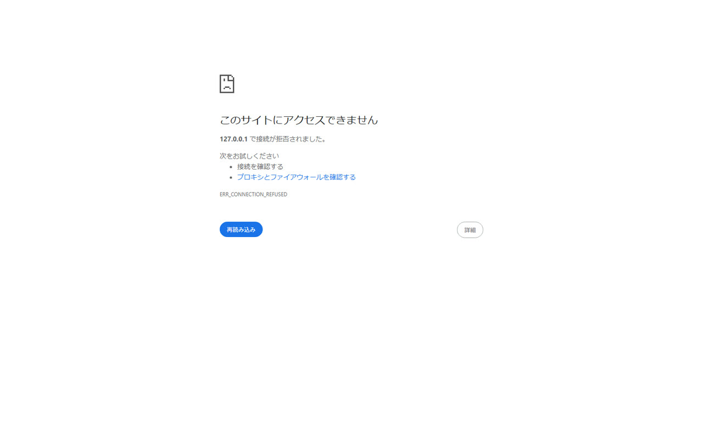
設定は、サイト構築ページのパスワード変更で「受付システム用」を選んで行います。設定していない場合は、役員ページのパスワードでログインします。
3. 【準備】大会を作る
「大会」タブを開き、下の「新しい大会を作る」に入力します。
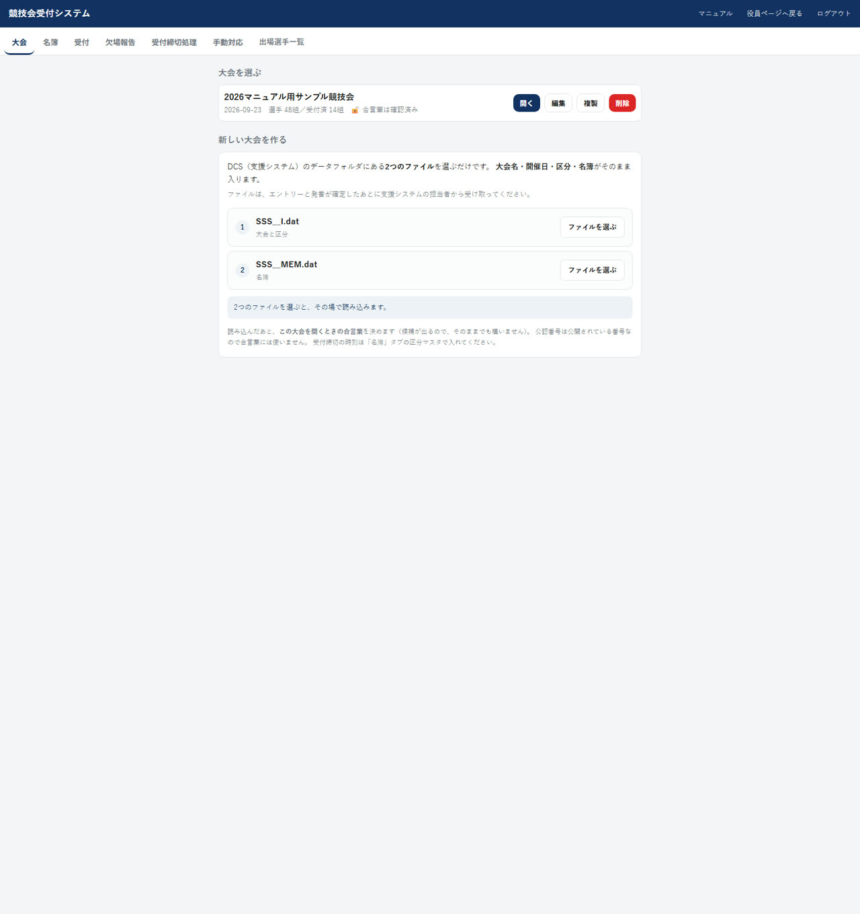
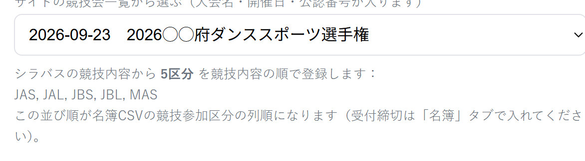
- サイトの競技会一覧から選ぶ プルダウンから選ぶと、大会名・開催日・公認番号が自動で入ります。 さらに、その大会のシラバス（大会要項）の競技内容から区分が読み取られ、そのまま登録されます（下の図）。一覧に無い大会は手入力してください。
- 公認番号 この大会を開くときの合言葉になります。ログインできる人でも、公認番号を知らなければその大会の名簿は開けません。
- 選手名簿CSV DCS（JDSF競技会支援システム）の「選手名簿ファイル処理」で書き出したCSVを、そのまま選べます。文字コード（Shift_JIS）はこちらで判定して読むので、変換や項目名の追加は不要です。
- 「作成する」を押す 大会が作られ、CSVがあれば同時に名簿へ取り込まれます。
シラバスの区分はどこから来るのか
このサイトが毎朝6時に JDSF の大会要項（シラバス）を見に行き、「競技内容」の表から 区分の略称（JAS・JBLなど）と競技名を、表に並んでいる順のまま取り込んでいます。 受付システムの一覧はその結果を読んでいるので、大会を選んだ時点で区分がその順で入ります。
| 取り込む対象 | サイトのトップページ「直近競技会情報」に出る競技会で、シラバスが公開済みのもの。 過去の大会やシラバス未公開の大会は入っていません。 |
|---|---|
| 取り込む時期 | 毎朝6時に自動で確認します。シラバスが公開された翌朝には入ります。 一度取り込んだ内容は変わらないものとして、取り直しません。 |
| 入らないもの | 受付締切の時刻はシラバスからは入りません。「名簿」タブの区分マスタで入れてください。 |
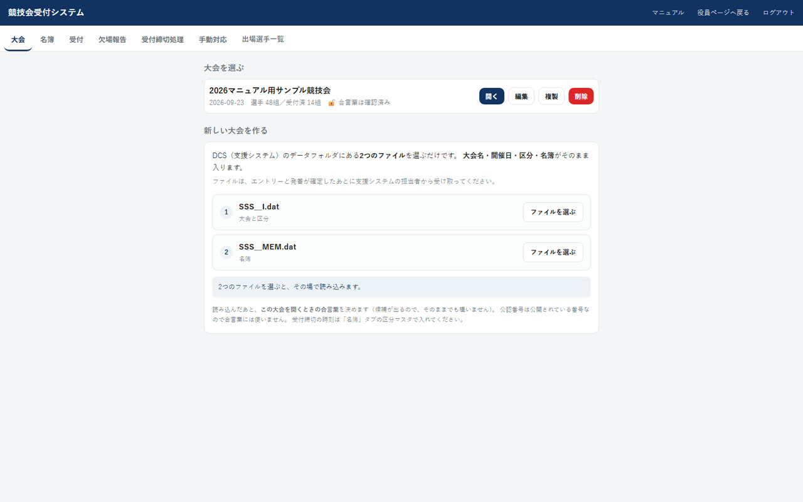
4. 【準備】区分を整える
「名簿」タブの上に区分マスタがあります。
サイトの競技会一覧から大会を作った場合は、シラバスの区分がすでに並んでいます（名称も入っています）。
そうでない場合は、名簿CSVの取込で見つかった区分コードが仮登録されるので、区分名を入れてください。
どちらの場合も受付締切の時刻は自動では入りません。ここで入れて「区分マスタを保存」を押します。
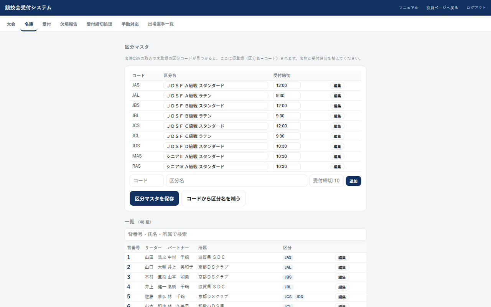
- 受付締切 タイムテーブルの受付締切時刻を 10:30 の形で入れます。同じ時刻の区分は、欠場者一覧でまとめて1枚に出ます。
- 「コードから区分名を補う」 JAS・JBL などの標準的なコードなら、区分名を自動で埋められます。埋めたあと必要に応じて直してください。
5. 【準備】名簿を確かめる
同じ「名簿」タブの下に、取り込んだ組の一覧が出ます。背番号・氏名・所属で検索できます。
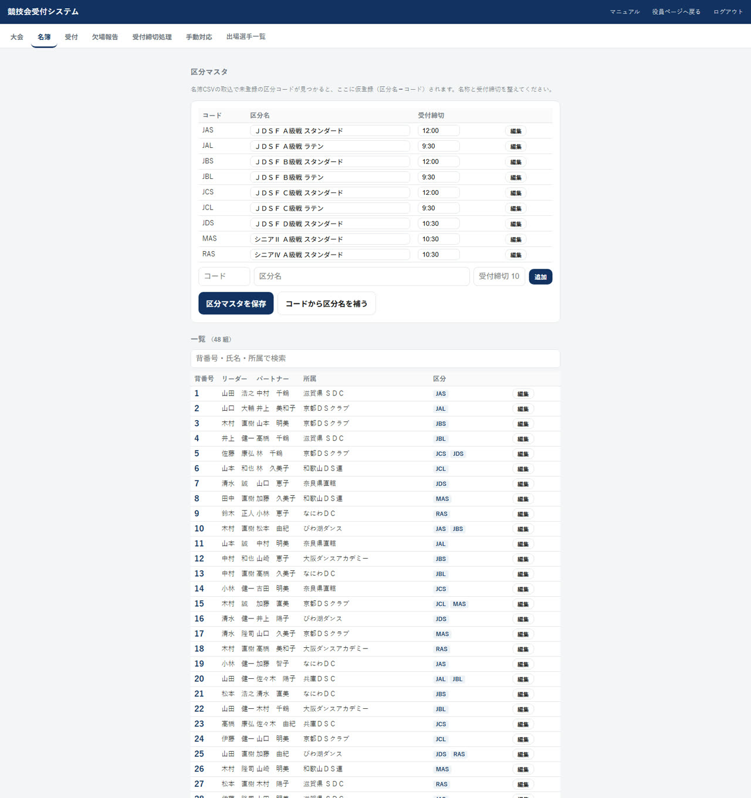
- 当日エントリーの追加や、背番号の変更はこの画面で行えます。
- 出場する区分のチェックが実際と違うと、欠場者一覧が合わなくなります。取込後にひととおり確認してください。
6. 【当日】受付する
「受付」タブを開きます。はじめに右上の受付担当者名を変更で自分の名前を入れてください。 誰が受付したかが記録に残ります（この端末に覚えます。毎回入れ直す必要はありません）。
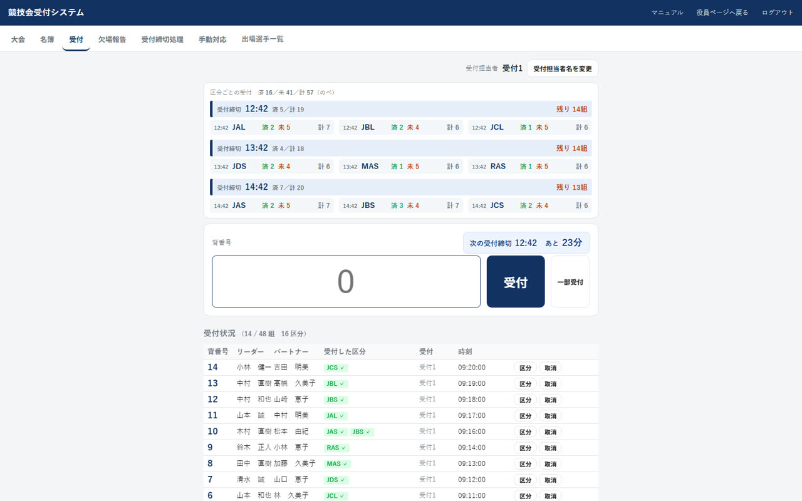
受付のしかた（2通り・どちらでも同じ）
| ボタンで受付 | 背番号を入れて受付を押す。1回の操作で受付できます。 |
|---|---|
| Enter 2回で受付 | 背番号を入れてEnter。1回目は確認だけで、氏名と出場する区分が出ます。合っていればもう一度Enterで受付します。 打ち間違えた背番号がそのまま受付されないよう、確認を挟んでいます。 |
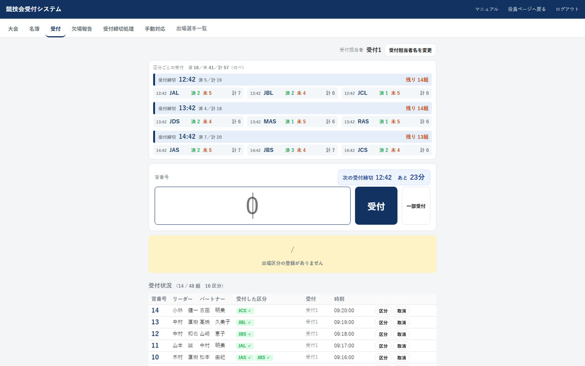
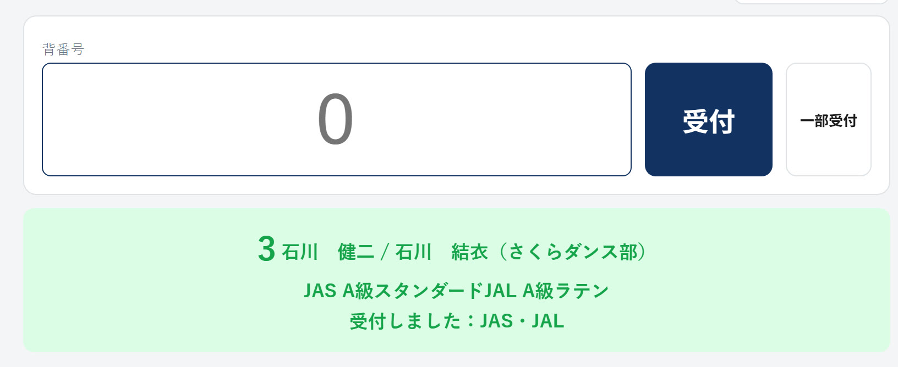
7. 【当日】一部の区分だけ受付する
「スタンダードだけ出て、ラテンは欠場」のように、一部の区分だけ出る組のときに使います。 背番号を入れて一部受付を押すと、その組のエントリー区分がボタンで出ます。
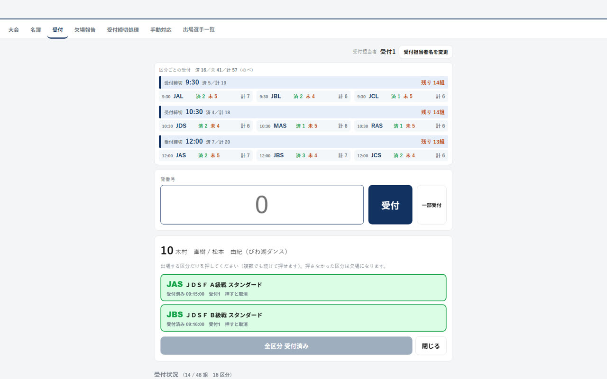
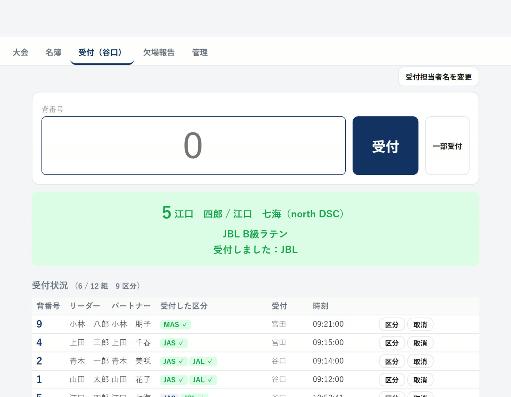
- 複数の区分に出る組は、続けて押せます。3区分・4区分にエントリーしている組で、そのうち2つ・3つに出る場合は、出る区分を順に押してください。1つ押しても画面は閉じません。
- 全部の区分に出るなら、この画面の全区分を受付でまとめて受付できます。
- すでに受付した区分（緑）をもう一度押すと、その区分の受付を取り消します。
- 押し終わったら、そのまま次の組の背番号を打ち始めれば画面は閉じます（閉じるでも閉じられます）。
8. 【当日】間違えたとき
| 背番号を間違えて受付した | 受付状況のその行の取消を押します。その組のすべての区分の受付が取り消されます。 |
|---|---|
| 区分を間違えた／1つ増やしたい | 受付状況のその行の区分を押すと、区分の選択画面が開きます。押し直して直してください。 |
| 名簿に無いと言われる | 背番号の打ち間違いか、名簿に入っていない組です。「名簿」タブで確認し、当日エントリーなら追加してください。 |
9. 【当日】欠場報告と背番号在庫
「欠場報告」タブで区分を選ぶと、その区分を受付していない組＝欠場と、受付した組＝出場が分かれて出ます。
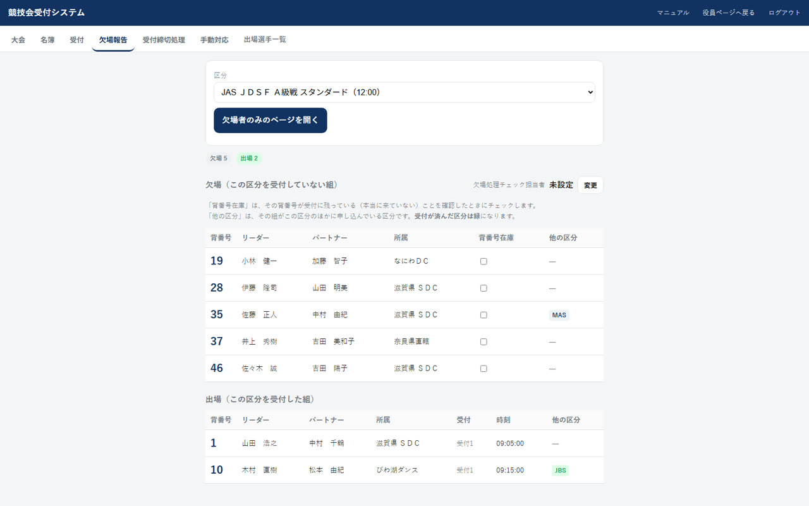
背番号在庫のチェック
欠場者の背番号が受付に残っている（＝本当に来ていない）ことを確認したら、その組の背番号在庫にチェックを入れます。 担当者名は受付担当者とは別に持てるので、右上の変更で確認した人の名前を入れてください。
ST初期振分が済んだら
欠場者を進行席へ渡し、DCSで初期振分を済ませたら、その区分の ST初期振分：未 を押して完了にしてください。 以後、その区分は受付も取消もできなくなります。
押すと確認の画面が出ます。「あなたは ST ですか」と「初期振分は済みましたか」の 2つにチェックを入れないと OK は押せません。 うっかり押して受付を止めてしまわないためです。
このとき、背番号在庫のチェックが入っていない欠場者がいると、その背番号を挙げて知らせます。 受付を忘れているだけの組を欠場のまま締めてしまわないよう、本当に来ていないかを確かめてから進めてください。
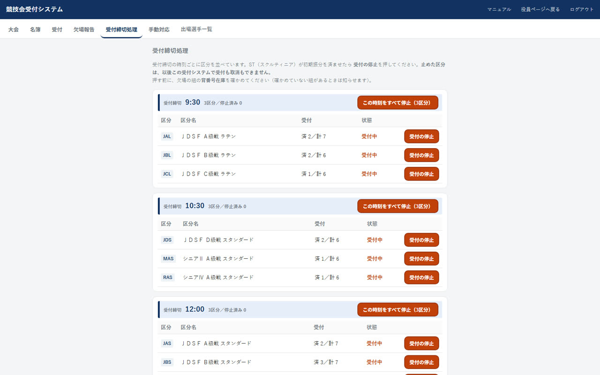
完了にしたあとにその区分を受付しようとすると、赤い枠で 「すでに初期振分済です。どのようにするか手動対応してください」と出て、受付されません。 背番号を入れた時点でも、振分済みの区分は取り消し線が引かれ、理由が出ます。 2つの区分に出ていて片方だけ振分済みのときは、まだの区分だけ受付します。
10. 【当日】欠場者一覧を印刷する
「欠場報告」タブの欠場者のみのページを開くを押すと、欠場した背番号だけを大きく並べたページが開きます。 進行席へ渡す用です。
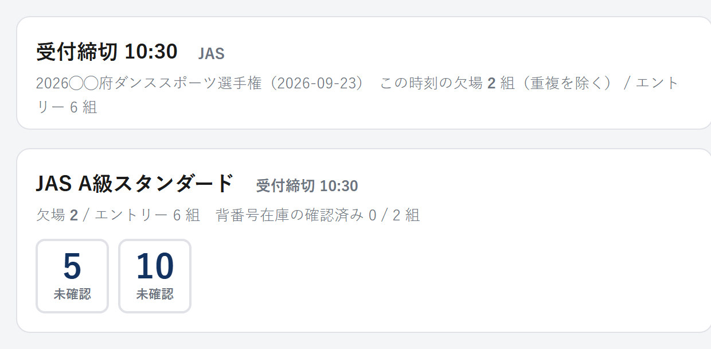
- 表示する範囲を選ぶ 2通りあります。受付締切ごと（「11:00 JAS, MAS, GAS」のように、その時刻の区分をまとめて1枚に）と、区分ごと（1区分だけ）です。ふつうは締切ごとで出します。
- 最新にする 受付は進み続けるので、印刷する直前に押してください。
- 印刷する ブラウザの印刷画面が出ます。ヘッダーやボタンは印刷されません。
このページの上にも受付システムと同じタブがあります。印刷したあと、そのまま「受付」や「欠場報告」へ戻れます。
11. 【当日】手動対応の一覧
ST初期振分が済んだあとに受付や取消をしようとすると、その場で止まります。 止まった件はこの「手動対応」タブに自動でたまりますので、受付の人が覚えておく必要はありません。 本部はこの一覧を見て、順に片づけてください。すべての端末で同じ一覧が見えます。
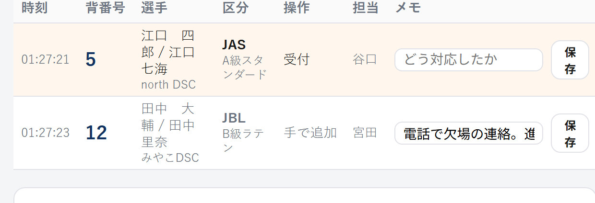
- 未対応の件が上に出ます タブにも 手動対応 2 のように件数が出るので、残っていることに気づけます。
- 対応したらメモに書きます 「DCSに手入力した」「欠場のまま」など、どうしたかを書いて 保存を押します。書いた件は対応済みになり、タブの件数から外れます。 消せばまた未対応に戻ります。
- 手で足すこともできます 電話で欠場の連絡が来たときなど、システムが止めていない件も 背番号と区分を選んで追加できます。
- 印刷できます 印刷するで、進行席へ渡せる形で出ます（ボタンや入力欄は印刷されません）。
12. 複数の端末で使う
- 受付レーンごとに端末を分けて、同時に受付できます。同じ大会を開くだけです。
- 画面は3秒ごとに自動で最新になります。手で更新する必要はありません。
- 画面の右上に更新 ○:○○:○○ と出ます。ここが動いていれば、その端末は最新です。
ただしページを再読み込みしたり、閉じて開き直したときは、もう一度聞かれます。端末を置いたまま離れても、その大会の中身が見え続けないようにするためです。
13. 困ったとき
| スマホの受付がパソコンに出ない | どちらかが本番以外のURLを開いています。両方のアドレスバーが jdsf-seibu.com か確認してください。 |
|---|---|
| 「この大会を開けなくなりました」と出た | ログインが切れたか、公認番号の確認が切れたか、大会が消されています。「大会」タブで開き直してください（公認番号を聞かれます）。 |
| 受付したのに欠場に出る | その区分を受付していません。受付状況でその組の区分が灰色になっていないか確認し、区分から受付してください。 |
| エントリーしていない区分を受付したい | できません。名簿の出場する区分を直してから受付してください（「名簿」タブ）。 |
| 背番号を入れても何も起きない | 大会を開いていない可能性があります。「大会」タブで「開く」を押してください。 |
| 「すでに初期振分済です」と出て受付できない | その区分はST初期振分が完了になっています。その件は「手動対応」タブに自動で残るので、本部で片づけてください。遅れて来た組は進行席と相談して手動で対応します。振分がまだなら、「欠場報告」タブか欠場者一覧のページで ST初期振分：完了 を押して「未」に戻せます。 |
| 会場のネットが不安定 | 受付の記録はサーバーに置いています。通信が切れている間は他の端末に伝わりません。復旧後、右上の更新時刻が動いていることを確認してください。 |
受付システム: https://jdsf-seibu.com/uketsuke.html